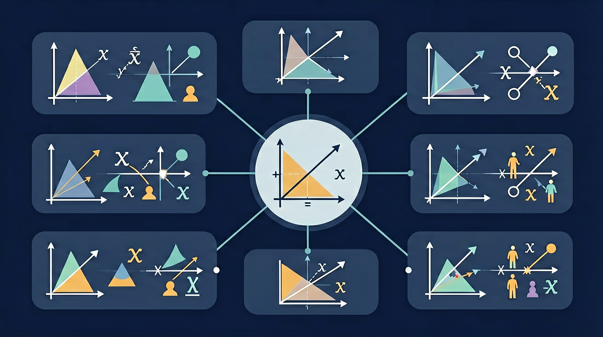

学完这一课，这三个问题你都能自信地回答。
1. 一次函数 y = 2x - 3 中，当 x = 2 时，y = ？
2. 下列哪组 (x, y) 是方程 2x + y = 5 的解？
3. 两条直线的交点表示什么？
k>0：从左下到右上
y随x增大而增大
k<0：从左上到右下
y随x增大而减小
🏋️ 即时练习：y = -2x + 5 的图象与 y 轴的交点是？
✅ 唯一解
两直线相交
k₁ ≠ k₂
❌ 无解
两直线平行
k₁=k₂, b₁≠b₂
♾️ 无数解
两直线重合
k₁=k₂, b₁=b₂
🏋️ 即时练习：方程组 {y=2x+1, y=2x-3} 的解的情况是？
例题：求 y=x+1 与 y=-x+3 的交点
步骤1：令两式相等
x + 1 = -x + 3
步骤2：解方程
2x = 2，x = 1
步骤3：代入求y
y = 1 + 1 = 2
结论：交点为 (1, 2)
🏋️ 即时练习：y = x + 2 与 y = -x + 4 的交点坐标是？
A商店：商品定价 y = 5x + 10（x为数量，y为总价元），B商店：y = 3x + 20。
1. y = 3x - 2 图象与 y 轴的交点纵坐标是？
2. 方程组 {y=x+3, y=2x+1} 的解是？
3. 两直线 y=2x+1 和 y=2x+4 的关系是？
4. y=x+2 和 y=-2x+5 的交点坐标是？
口诀：方程组的解哪里找？图象交点跑不了。k 同 b 不同，平行无解；k、b 都相同，重合无数道。
类比：两条直线像两条公交线路，交点就是"换乘站"——它既在 1 号线上、又在 2 号线上。方程组的解，就是同时"坐得上"两条线的那个站。
一次函数的图像是一条直线。斜率 k 决定了直线的倾斜方向和程度：k > 0 时，直线从左下向右上倾斜；k < 0 时，直线从左上向右下倾斜。截距 b 决定了直线与 y 轴的交点。例如，函数 y = -x + 3 的图像是一条斜率为 -1、截距为 3 的直线。通过两点可以确定一条直线，因此只需找到两个满足函数的点，就能画出图像。比如 y = 2x - 1，当 x = 0 时 y = -1，当 x = 1 时 y = 1，连接这两点即可。
先独立作答，再点选项查看对错与错因。
直线y=2x+3与y=-x+b的交点在x轴上，则b的值为
方程组{2x+y=5; x-y=1}的解对应于坐标系中的
若直线y=kx+5与y=3x-2平行，则k的值为
直线y=____x-4经过点(2,0)，则斜率为____
答案：2
将(2,0)代入方程得0=2k-4，解得k=2
方程组{3x+2y=8; 6x+4y=16}有____个解
答案：无数
两方程成比例关系，表示同一直线
关于一次函数图像性质，正确的是
分析两家运营商的话费套餐：A公司月租50元含100分钟，超出部分0.3元/分钟；B公司无月租但0.5元/分钟
💡 画两条直线，看交点即公共解。
外链：https://phet.colorado.edu/sims/html/graphing-lines/latest/graphing-lines_zh_CN.html
开放任务：用三步写出你如何向同学讲清「一次函数与方程组」。